Summary. This sheet summarises the contributions to the objective function of the constant, variance and residual terms, as well as the types of variance models used for each measured variable in each experiment and their respective contributions to the objective function. It also shows the estimated parameters. Parameters in red colour indicate either that the estimated value is at one of its bounds or that the confidence intervals are very large (see also the "Statistical significance" sheet). A sample summary sheet for the batch reactor example can be found in the next chapter.
Parameter estimates. This sheet summarises the estimated values of the model parameters and the parameters of the different statistical variance models used, together with their initial guesses, and lower and upper bounds (see next chapter).
Variance matrix. This sheet prints the variance-covariance matrix, V. This matrix contains the variances and covariances of the estimated process model and variance model parameters. The square root of each diagonal element, , is the approximated standard deviation of the respective estimated parameter.
The following approximation to the variance-covariance matrix is used:
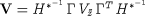
where
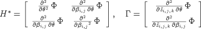
and 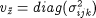 denotes the variance-covariance matrix of the measurement errors. The variance-covariance matrix of the estimated
parameters, V, is of size 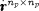 , where Np is the number of all estimated parameters (process model parameters
 and variance model parameters 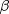 ) whose values do not lie at one of their respective lower or upper bounds.
and variance model parameters 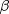 ) whose values do not lie at one of their respective lower or upper bounds.
Correlation matrix. This sheet prints the correlation matrix, R, which is calculated from the variance-covariance matrix,
where 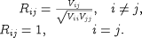
Values with absolute value close to one in the off-diagonals indicate a high correlation of the corresponding parameters i and j, and vice versa. The high correlation of these parameters can also be seen in the corresponding confidence ellipsoid plots (see below).
Information matrix. This sheet prints the Fischer information matrix, M, which is equal to the inverse of the variance-covariance matrix V. It also prints the 90%, 95% and 99% F-values for this matrix (calculated using internal statistical functions).
An approximate 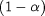 highest posterior density region for the parameters 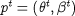 is given by
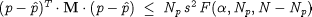
with
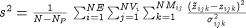
which forms an ellipsoid in the Np-dimensional parameter space.1Again only those parameters whose values are not at one of their bounds are considered. An 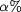 confidence region means that if we repeat the experiments (which produces nearly the same measurements, but with slightly
different observation values and therefore a different distribution of the measurement errors), and estimate the parameters out of the repeated
experimental data, the values of the estimated parameters will lie in this confidence region with  probability.2Note that the confidence ellipsoid is only a linear approximation of the non-linear confidence region and may not be very accurate
for models which are highly non-linear in the parameters.Confidence ellipsoids for any chosen pair of parameters can be plotted by selecting the Plot option (see below).
probability.2Note that the confidence ellipsoid is only a linear approximation of the non-linear confidence region and may not be very accurate
for models which are highly non-linear in the parameters.Confidence ellipsoids for any chosen pair of parameters can be plotted by selecting the Plot option (see below).
Statistical significance. This sheet prints:
-
the estimated values of the process model and variance model parameters;
-
the 90%, 95%and 99% confidence intervals for the estimated model and variance model parameters. The confidence ellipsoid is bounded by the box
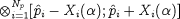
The sides of the box, 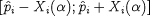 , are called the two-sided joint confidence intervals.
These are calculated from 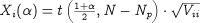
-
95% t-values for the estimated parameters. These are calculated from:
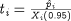
The t-values show the percentage accuracy of the estimated parameters with respect to the 95% confidence intervals.
The associated t-values, ti, are compared with the reference 95% t-value, t(0.95,N-Np), which is again calculated using internal statistical functions. A t-value larger than the reference t-value indicates that the corresponding parameter has been accurately estimated (the standard deviation and the confidence interval are small compared to the value of the estimated parameter); a smaller value indicates a poor estimate of the corresponding parameter.
-
the standard deviations
 of the estimated parameters.
of the estimated parameters.
Measured variable information. For each measured variable in each experiment, a sheet is produced with
the measured and predicted values, the standard deviations and the absolute, relative and weighted deviations. One such sheet for the variable
R101.C(1) in the batch reactor experiment C13T1 is shown in the section on graphical
analysis.